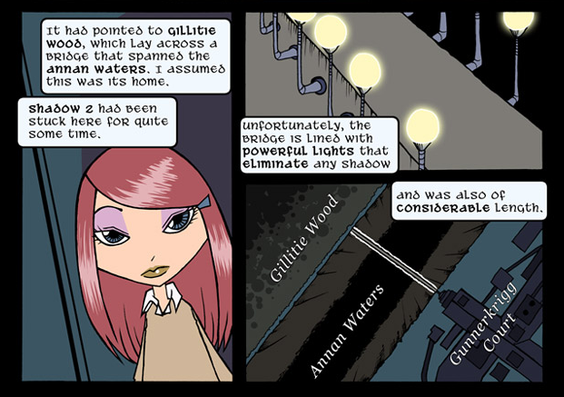
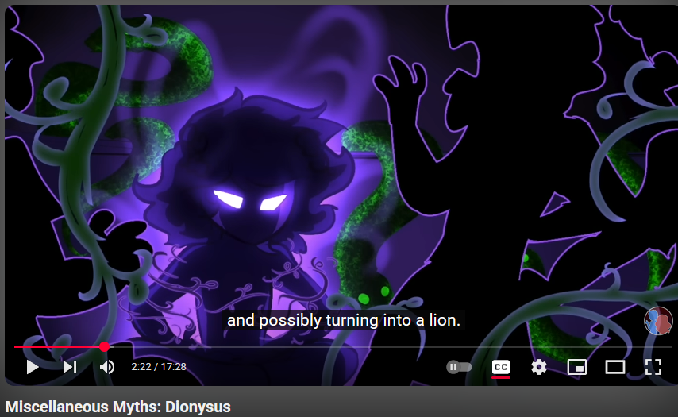

Kevin Perjurer has repeatedly inspired me with his in-depth analysis of theme park history and design. In addition, his skill for making mundane topics into captivating and entertaining documentaries is truly remarkable.
Tom Siddell's Gunnerkrigg Court has been a long-time inspiration for me, both in terms of storytelling and art style. Watching his art grow as his story slowly unfolds over decades has shown me what an artist can achieve when they are committed to their craft.
Red from Overly Sarcastic Productions has inspired me with her unique blend of humor and education, furthermore the thoroughness of her research truly goes above and beyond what I usually expect for online content. Her ability to make complex topics accessible and entertaining is something I admire greatly.